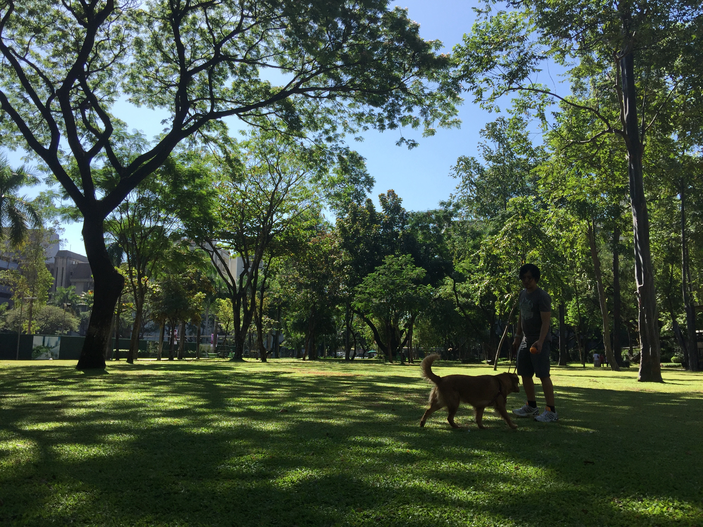

HOME
Others
Food - Burger
Food - Chicken
Place - Park
Place - Beach
Hobbies - Fetch
Hobbies - Cuddles
Chubi's Favorite Place - Park

More Article
6 Places for Dog Walking in Makati and Taguig For You and Your Furkids’ Quality Time
Pets and the city–guide to pet-friendly malls
Dog parks (and dog-friendly parks) in Manila where you and your pup can hang out
Dog Park Safety: What to Know Before You Go